SPIM Registration Method
Contents
Citation
Please note that the SPIM registration plugin available through Fiji, is based on a publication. If you use it successfully for your research please be so kind to cite our work:
- S. Preibisch, S. Saalfeld, J. Schindelin and P. Tomancak (2010) "Software for bead-based registration of selective plane illumination microscopy data", Nature Methods, 7(6):418-419. Webpage PDF Supplement
Important Note
For details about the SPIM registration, fusion & deconvolution please have a look at the Multiview Reconstruction Plugin. It is much more powerful, flexible and completely integrated with the BigDataViewer. Documentation on the outdated SPIM Registration is still available.
Introduction
SPIM principles

A Selective Plane Illumination Microscope[1] (Figure 1), achieves optical sectioning by focusing the excitation laser into a thin laser light sheet that reaches its minimal thickness in the middle of the field of view. The light sheet enters the water filled sample chamber and illuminates the sample which is embedded in an agarose column. The agarose protrudes from the end of a glass capillary attached to a motor that rotates the sample. The objective lens is arranged perpendicular to the light sheet. The perpendicular orientation of the illumination and detection optics ensures that only a section of the specimen in-focus is illuminated, minimizing photo-bleaching and laser damage of the living samples and allowing for very long time-lapse recordings. Two-dimensional images of emitted fluorescent light are captured by a CCD camera focussed on the center of the light-sheet. The CCD camera captures the light-sheet-illuminated section in a single exposure enabling a very fast acquisition rate important for capturing dynamic developmental events. In order to acquire 3d image stacks, the sample is moved through the light sheet in increments of 0.5 μm to 5 μm depending on the objective and the light sheet thickness.
The SPIM instrument can, in principle, achieve an isotropic, high resolution along  ,
,  and
and  -axis allowing in toto imaging of large 3d specimens. In order to achieve an isotropic resolution uniformly across the sample volume in all three dimensions, it is necessary to rotate the sample and record image stacks of the same specimen from different angles (usually 3 to 12, see Video 1).
-axis allowing in toto imaging of large 3d specimens. In order to achieve an isotropic resolution uniformly across the sample volume in all three dimensions, it is necessary to rotate the sample and record image stacks of the same specimen from different angles (usually 3 to 12, see Video 1).
Related work
Multi-view microscopy techniques, such as tilted confocal acquisitions,[2]
SPIM[1] and Ultramicroscopy[3]
(2 views), can increase the resolution along the -axis and thus enable the analysis of objects smaller than the axial resolution limit.[2][4]
Image reconstruction based on the image intensities requires significant overlap of image content which is often difficult to achieve particularly in live imaging of dynamically changing samples.
The idea to incorporate fiduciary markers to facilitate sample independent reconstruction is widely used in medical imaging[5][6][7][8][9] and electron tomography.[10][11] Due to the low amount of fiduciary markers available for registration, research is focused on error analysis rather than efficiency of matching of thousands of markers with only partial overlap.[7]
In contrast, in the robotics and automation field, there is interest in localization of large amounts of different objects. Points of interest are extracted from photos and checked against databases to determine their type and orientation.[12][13] To enable real time object recognition, Lamdan et al.[14] introduced ‘geometric hashing'’ which uses an intrinsic invariant local coordinate system to match objects against database entries in a viewpoint independent manner. The geometric hashing principle is reused in the fields of astronomy[15] and protein structure alignment and comparison[16][17][18][19] where efficient searching in massive point clouds is required.
The use of local descriptors instead of complete scenes for matching is proposed in many fields comprising image registration,[20][21] robotics and autonomous systems,[22][23] and computer vision.[24]
Matula et al.[25] suggest segmentation based approaches for reconstruction of multi-view microscopy images. The center of mass of the cloud of segmented objects is used as a reference point for a cylindrical coordinate system facilitating the registration between two views. Similarly to intensity based approaches, this method requires significant overlap between the images and furthermore supports alignment of only two stacks at a time.
Our approach combines the idea of using fiduciary markers, local descriptors and geometric hashing and applies global optimization. It can register an arbitrary number of partially overlapping point clouds. It is robust with respect to the amount of incorporated beads, bead distribution, amount of overlap, and can reliably detect non-affine disturbances (e.g. abrupt agarose movement) that might occur during imaging (Table 1).
The Method
Bead Segmentation
The incorporated sub-resolution beads appear as the Point Spread Function (PSF) of the microscopic system in each image 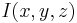. To detect beads, one would ideally convolve it with the impulse response (PSF) of the microscope yielding highest correlation at the sub-pixel location of each bead. However, the PSF is not constant over different experiments due to changing exposure times, laser power, bead types, objectives and agarose concentration. Furthermore, the PSF is not constant across the field of view due to the concavity of the light sheet and thus the convolution operation is computationally very demanding.
We found that an appropriately smoothed 3d LaPlace filter  detects all beads with sufficient accuracy while effectively suppressing high frequency noise. As suggested in the Computer Vision literature,[26][21]
we approximate
detects all beads with sufficient accuracy while effectively suppressing high frequency noise. As suggested in the Computer Vision literature,[26][21]
we approximate  by the difference of two Gaussian convolutions (DoG) of the image
by the difference of two Gaussian convolutions (DoG) of the image  with a standard deviation
with a standard deviation  of 1.4 px and 1.8 px respectively. All local minima in a 3×3×3 neighborhood in represent intensity maxima whose sub-pixel location is then estimated by fitting a 3d quadratic function to this neighbourhood.[27]
The DoG detector identifies beads even if they are close to each other, close to the sample or those with an unexpected shape. It also massively oversegments the image detecting ‘blob-like’ structures, corners and various locations alongside edges or planes within the imaged sample. However, those detections do not interfere with the registration process as the descriptors that incorporate them are filtered out by local descriptor matching (see Figure 2). Only beads are repeatably detected in different views.
of 1.4 px and 1.8 px respectively. All local minima in a 3×3×3 neighborhood in represent intensity maxima whose sub-pixel location is then estimated by fitting a 3d quadratic function to this neighbourhood.[27]
The DoG detector identifies beads even if they are close to each other, close to the sample or those with an unexpected shape. It also massively oversegments the image detecting ‘blob-like’ structures, corners and various locations alongside edges or planes within the imaged sample. However, those detections do not interfere with the registration process as the descriptors that incorporate them are filtered out by local descriptor matching (see Figure 2). Only beads are repeatably detected in different views.
Establishing Bead Correspondences

To register two views  and
and  the corresponding bead pairs 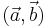 have to be identified invariantly to translation and rotation. To this end, we developed a geometric local descriptor . The local descriptor of a bead is defined by the locations of its 3 nearest neighbors in 3d image space ordered by their distance to the bead. To efficiently extract the nearest neighbors in image space we use the kd-tree implementation of the WEKA framework.[28]
Translation invariance is achieved by storing locations relative to the bead. That is, each bead descriptor is an ordered 3d point cloud of cardinality 3 with its origin
the corresponding bead pairs 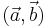 have to be identified invariantly to translation and rotation. To this end, we developed a geometric local descriptor . The local descriptor of a bead is defined by the locations of its 3 nearest neighbors in 3d image space ordered by their distance to the bead. To efficiently extract the nearest neighbors in image space we use the kd-tree implementation of the WEKA framework.[28]
Translation invariance is achieved by storing locations relative to the bead. That is, each bead descriptor is an ordered 3d point cloud of cardinality 3 with its origin  } being the location of the bead.
} being the location of the bead.
Local descriptor matching is performed invariantly to rotation by mapping the ordered point cloud of all beads  to that of all beads 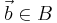 individually by means of least square point mapping error using the closed-form unit quaternion-based solution.[29]
The similarity measure
to that of all beads 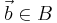 individually by means of least square point mapping error using the closed-form unit quaternion-based solution.[29]
The similarity measure  is the average point mapping error. Each candidate in is matched against each candidate in . Corresponding descriptors are those with minimal . This approach, however, is computationally very demanding as it has a complexity of 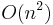 regarding the number of detections.[30]
is the average point mapping error. Each candidate in is matched against each candidate in . Corresponding descriptors are those with minimal . This approach, however, is computationally very demanding as it has a complexity of 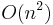 regarding the number of detections.[30]
We therefore employed a variation of geometric hashing[14] to speed up the matching process. Instead of using one reference coordinate system for the complete scene we define a local coordinate system for each of the descriptor as illustrated and described in Figure 2. All remaining bead coordinates not used for defining the local coordinate system become rotation invariant which enables us to compare descriptors very efficiently using kd-trees to index remaining bead coordinates in the local coordinate system. Again, we employ the kd-tree implementation of the WEKA framework[28] on a six-dimensional tree to identify nearest neighbors in the descriptor space, i.e. descriptors which are most similar. The most similar descriptors that are significantly better (10×) than the second nearest neighbor in descriptor space are designated correspondence candidates.[21]
Descriptors composed of only four beads are not completely distinctive and similar descriptors can occur by chance. Increasing the number of beads in the descriptor would make it more distinctive to the cost of less identified correspondences and increased computation time. All true correspondences agree on one transformation model for optimal view registration, whereas each false correspondence supports a different transformation. Therefore, we used the minimal descriptor size (4 beads) and rejected false correspondences from candidate sets with the Random Sample Consensus (RANSAC)[31] on the affine transformation model followed by robust regression.
Global Optimization
The identified set of corresponding beads 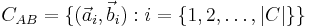 for a pair of views and defines an affine transformation 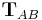 that maps to by means of least square bead correspondence displacement

We use an affine transformation to correct for the anisotropic -stretching of each view introduced by the differential refraction index mismatch between water and agarose[32][25] as the sample is never perfectly centered in the agarose column.
Registration of more than two views requires groupwise optimization of the configuration 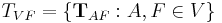 with 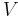 being the set of all views and 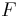 being a fixed view that defines the common reference frame. Then, the above Equation extends to

with  being the set of bead correspondences between view and view whereas and . This term is solved using an iterative optimization scheme. In each iteration, the optimal affine transformation 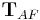 for each single view 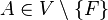 relative to the current configuration of all other views is estimated and applied to all beads in this view. The scheme terminates on convergence of the overall bead correspondence displacement. This solution allows us to perform the global optimization with any transformation model in case the microscopy set-up has different properties (e. g. translation[33], rigid[30]).
being the set of bead correspondences between view and view whereas and . This term is solved using an iterative optimization scheme. In each iteration, the optimal affine transformation 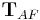 for each single view 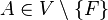 relative to the current configuration of all other views is estimated and applied to all beads in this view. The scheme terminates on convergence of the overall bead correspondence displacement. This solution allows us to perform the global optimization with any transformation model in case the microscopy set-up has different properties (e. g. translation[33], rigid[30]).
Time-lapse registration
During extended time-lapse imaging, the whole agarose column may move. To compensate the drift, we used the bead-based registration framework to register individual time-points to each other. We select a single view  from an arbitrary time-point 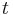 in the middle of the series as reference. Subsequently, we use the stored DoG detections to identify the true corresponding local geometric descriptors for all pairs of views and
from an arbitrary time-point 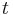 in the middle of the series as reference. Subsequently, we use the stored DoG detections to identify the true corresponding local geometric descriptors for all pairs of views and
 and calculate an affine transformation 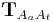 that maps
and calculate an affine transformation 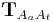 that maps  to by means of least square bead correspondence displacement. The identified transformation matrices are then applied to all remaining views in the respective time-points resulting in a registered time series (Figure 4a).
to by means of least square bead correspondence displacement. The identified transformation matrices are then applied to all remaining views in the respective time-points resulting in a registered time series (Figure 4a).
Image Fusion and blending

The registered views can be combined to create a single isotropic 3d image. An effective fusion algorithm must ensure that each view contributes to the final fused volume only useful sharp image data acquired from the area of the sample close to the detection lens. Blurred data visible in other overlapping views should be suppressed. We use Gaussian Filters to approximate the image information at each pixel in the contributing views (Figure 3c,f).[34]
For strongly scattering and absorbing specimen like Drosophila , we typically do not image the entire specimen in each single view, but instead stop at roughly two thirds of its depth as the images become increasingly blurred and distorted. In the reconstructed 3d image, this introduces line artifacts in areas where a view ends abruptly (Figure 3a,d). To suppress this effect for the purposes of data display, we apply non-linear blending close to the edges of each border between the views (Figure 3b,e).[33]
Precise registration of multi-view data is the prerequisite for multi-view deconvolution of the reconstructed image which can potentially increase the resolution.[4][35][36] Having sub-resolution fluorescent beads around the sample facilitates the estimation of a spatially dependent point spread function and validates the deconvolution results.
Strategies for bead removal
The presence of sub-resolution fluorescent beads used for the registration of the views might interfere with subsequent analysis of the dataset. To computationally remove the beads from each view we compute the average bead shape by adding the local image neighborhood of all true correspondences (beads used for registration) of the respective view. The acquired template is subsequently used to identify other beads; to speed up the detection we compare this template only to all maxima detected by the Difference-of-Gaussian operator during the initial bead segmentation step. These DoG-detections contain all image maxima and therefore all beads of the sample. The beads are then removed by subtracting a normalized, Gaussian-blurred version of the bead template. This method reliably removes beads which are clearly separated from the sample judged by the average intensity in the vicinity of the detected bead. Therefore, some beads that are positioned very close to the sample are not removed as the bead-subtraction would interfere with the samples' intensities.
To completely remove all beads from the sample we adapt the intensities of the beads to the imaged sample. Therefore we simply embed beads excitable by a different wavelength then the fluorescent maker in the sample and use a long-pass filter for detection (Figure 6e,g). In such acquisition the intensity of the beads is around 2-4.
Evaluation
Evaluation of the performance of the bead-based registration framework

We created a visualization of the optimization procedure. For each view, we display its bounding box and the locations of all corresponding descriptors in a 3d visualization framework[37]. Correspondences are color coded logarithmically according to their current displacement ranging from red (>100 px) to green (<1 px). The optimization is initialized with a configuration where the orientation of the views is unknown; all views are placed on top of each other and thus the corresponding descriptor displacement is high (red). As the optimization proceeds, the average displacement decreases (yellow) until convergence at about one pixel average displacement (green) is achieved. Video 2 shows the optimization progress for an 8 angle acquisition of fixed C.elegans . The outline of the worm forms in the middle (grey), since many worm nuclei were segmented by the DoG detector but discarded during establishment of bead correspondences.
The global optimization scheme can be seamlessly applied to tiled multi-view acquisitions. In such a set-up, different parts of a large 3d sample are scanned with a high-magnification lens from multiple angles separately. All such acquisitions can be mixed, discarding all information about their arrangement and the global optimization recovers the correct configuration. An example of such optimization is shown in Video 3 containing a fixed Drosophila embryo imaged from 8 angles across two or three tiles per angle on a single photon confocal microscope with a 40×/0.8 Achroplan objective.
To prove the accuracy of the bead-based registration framework, we created a simulated bead-only dataset with beads approximated by a Gaussian filter response with σ=1.5 px. We generated 8 different views related by an approximately rigid affine transformation with isotropic resolution. The reconstruction of this dataset yielded an average error of 0.02 px (Table 1).
For real-life datasets, the registration typically results in errors of about 1 px or slightly lower (Figure 4b and Table 1) where the remaining error is introduced by the localization accuracy of the bead detector and small non-affine disturbances induced by elastic deformation of the agarose. In the 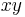-plane of each view, the beads can be localized very precisely, however, alongside , the localization accuracy drops due to a lower sampling rate and an asymmetric PSF. This is supported by the dimension dependent error shown in Figure 4c,d.
Table 1 shows that for the registration we usually use significantly more beads than necessary to solve an affine transformation (4 beads). It is necessary to use many beads for registration due to the following reasons:
- If the overlap between stacks is—as in many examples shown—very small, it has to be ensured that in these small overlapping areas there are still enough fiduciary markers to align the stacks.
- If two stacks are extensively overlapping, the beads have to be evenly distributed around the sample to ensure an even error distribution throughout the sample. Otherwise, small errors in, for example, the lower left corner do not control the registration error in the upper right corner where there are no fiduciary markers.
- The localization error of the beads is normally distributed as shown in Figure 4c,d. That means, the more beads are included in the registration, the more accurate is the average localization of the beads. Consequently, the affine transformation for each individual stack yields lower residual error the more beads are used.
Due to the optical properties of the sample it might occur that beads are distorted and aberrated and therefore detected in the wrong location. Typically, such beads are excluded as they do not form repeatable descriptors between the different stacks. If the distortions are minor, they will contribute to the residual error of the affine transformation. However, the contribution is small as those beads represent a very small fraction of all beads. This is supported by the maximal transfer error of 1 px of the affine model (see also inset of Figure 5c,d).
Examples of within and across time-points registered time-series of Drosophila embryonic development are shown in Video 4 and Video 5. The videos show 3d renderings of the developing embryos expressing His-YFP in all cells. The 3d rendered single embryo is shown from four and three arbitrary angles to highlight the complete coverage of the specimen. Video 4 shows in 42 time-points (7 angles) the last two synchronous nuclear divisions followed by gastrulation. Video 5 captures in 249 time-points (5 angles) Drosophila embryogenesis from gastrulation to mature embryo when muscle activity effectively prevents further imaging.
Performance of the bead-based registration framework in comparison with intensity-based methods

Existing muti-view SPIM registration approaches that use sample intensities to iteratively optimize the quality of the overlap of the views do not work reliably and are computationally demanding.[4][34][38] Alternatively, the registration can be achieved by matching of segmented structures, such as cell nuclei, between views[39] However, such approaches are not universally applicable, as the segmentation process has to be adapted to the imaged sample.
To evaluate the precision and performance of the bead-based registration framework we compared it against the intensity-based registration method that we developed previously.[38] This method identifies the rotation axis common to all views by iterative optimization of FFT-based phase correlation between adjacent views. We applied both methods (bead-based and intensity-based) to a single time-point of live 7-view acquisition of Drosophila embryo expressing His-YFP in all cells embedded in agarose with beads. We chose a time-point during blastoderm stage where the morphology of the embryo changes minimally over time. We evaluated the precision of both methods by the average displacement of the corresponding beads and concluded that the bead-based registration framework clearly outperformed the intensity-based registration in terms of bead registration accuracy (0.98 px versus 6.91 px, see Table 1, Figure 5). The increased precision in the bead alignment achieved by the bead-based registration framework is reflected in noticeably improved overlap of the nuclei in the sample (see Figure 5c–h). Moreover, the intensity-based method required approximately 9 hours of computation time compared to 2.5 minutes for the bead-based registration framework executed on the same computer hardware (Intel Xeon E5440 with 64GB of RAM), i.e. the bead-based framework is about 200 faster for this dataset.
| Dataset | min/avg/max error [px] | DoG detections | True correspondence number (ratio) | processing time [min:sec] |
|---|---|---|---|---|
| Fixed C.elegans, 8 views SPIM 40×/0.8NA |
1.02/1.12/1.31 | 4566 | 1717 (98%) | 11:09 |
| Live Drosophila, 5 views SPIM 20×/0.5NA |
0.76/0.81/1.31 | 9267 | 1459 (97%) | 2:31 |
| Fixed Drosophila, 10 views SPIM 20×/0.5NA |
0.65/0.78/0.97 | 9035 | 1301 (93%) | 20:10 |
| Fixed Drosophila, 11 views Spinning Disc 20×/0.5NA |
1.10/1.33/1.86 | 6309 | 978 (92%) | 6:15 |
| Simulated Dataset, 8 views Isotropic Resolution |
0.02/0.02/0.02 | 2594 | 2880 (96%) | 15:54 |
| Live Drosophila, 7 views SPIM 20×/0.5NA bead-based |
0.87/0.98/1.17 | 6232 | 603 (97%) | 2:27 |
| Live Drosophila, 7 views SPIM 20×/0.5NA intensity-based |
0.93/6.91/9.59 | n.a. | n.a. | 515:10 |
We show minimal, average and maximal displacement of all true correspondences (beads) after convergence of the global optimization. The simulated dataset shows very low registration errors. The total number of DoG detections is typically much higher than the number of extracted correspondence candidate pairs although a DoG detection can participate in more than one correspondence pair. The ratio of true correspondences versus correspondence candidates is typically above 90%. Lower ratios indicate a registration problem, for example caused by movement of the agarose during stack acquisition. The processing time (segmentation and registration) was measured on a dual quad-core Intel Xeon E5440 system.
Samples imaged by SPIM
Overview of imaged specimens

We demonstrated the performance of our registration framework on multi-view in toto imaging of fixed and living specimen of various model organisms (Figure 6), in particular Drosophila . Fixed Drosophila embryos were stained with Sytox-Green to label all nuclei. For live imaging, we used a developing Drosophila embryo expressing fluorescent His-YFP under the control of endogenous promoter visualizing all nuclei. Drosophila specimens were imaged with a SPIM prototype equipped with a Zeiss 20×/0.5 Achroplan objective.
Sample mounting for SPIM
We matched the fluorescence intensity of the beads to the signal intensity of the sample. For live imaging of His-YFP which is relatively dim and requires longer exposure times (0.3 s), we used red or yellow fluorescent beads that are suboptimal for the GFP detection filter set and therefore typically less bright than the sample. Conversely, for the imaging of the bright, fixed specimen, we used green fluorescent beads which give adequate signal at very short exposure times (0.01 s).
Despite the fact that our algorithm is robust with respect to the amount of beads available for registration, too many beads unnecessarily increase the computation time, while too few beads may result in an inadequate number of correspondences due to incomplete overlap of the views. Therefore, we determined empirically the optimal concentration of beads for each magnification (ideally 1,000–2,000 beads per imaged volume). We prepared a 2× stock solution of beads (13 μl of concentrated bead solution (Estapor Microspheres FXC050))
Sample independent registration
We applied the bead-based registration framework to various samples derived from major model organisms. These include Drosophila embryo, larva (Figure 6a–c) and oogenesis (Figure 6d), C. elegans adult (data not shown), larval stages (Figure 6e) and early embryo (Figure 6f), whole mouse embryo (Figure 6g), and dual color imaging of zebrafish embryo (Figure 6h). Despite the fact that the samples range significantly in their size, fluorescent labeling, optical properties and mounting formats the bead-based registration framework was invariably capable of achieving the registration. Therefore, we conclude that our method is sample independent and is universally applicable for registration of any multi-view SPIM acquisition where the sample movement does not disturb the rigidity of the agarose.
Broad applicability of the bead-based framework to multi-view imaging

Having the bead-based registration framework for multi-view reconstruction established, we sought to expand its application beyond SPIM, to other microscopy techniques capable of multi-view acquisition.[40] We designed a sample-mounting set-up that allows imaging of a sample embedded in a horizontally positioned agarose column with fluorescent beads (Figure 7a). The agarose column was manually rotated mimicking the SPIM multi-view acquisition. We acquired multiple views of fixed Drosophila embryos stained with nuclear dye on a spinning disc confocal microscope and reconstructed the views using the bead-based registration framework. By mosaicking around the sample, we captured the specimen in toto and achieved full lateral resolution in areas that are compromised by the poor axial resolution of a single-view confocal stack (Figure 7b,c,d and Video 6 ). The combination of multi-view acquisition and bead-based registration is applicable to any imaging modality as long as the fluorescent beads can be localized and the views overlap.
Sample mounting for multi-view imaging on an upright microscope
We constructed a sample chamber for multi-view imaging on an upright microscope that consists of a teflon dish equipped with a hole in the side wall which has the diameter of a standard glass capillary (Figure 7a). The capillary mounting hole continues on the bottom of the dish as a semi-circular trench of approximately half the thickness of the capillary diameter, extending about 2/3 of the dish radius towards the center of the dish. This trench serves as a bed for the glass capillary inserted through the capillary mounting hole. The trench is extended by a second, shallower trench whose bottom is elevated with respect to the deeper trench by the thickness of the capillary glass wall. The second trench serves as a bed for the agarose column which is pushed out of the capillary by a tightly fitted plunger (not shown). The teflon dish is equipped on one side with a plastic window enabling visual inspection of the sample and the objective lens.
For imaging, the capillary with the sample embedded in agarose containing appropriate amount of fluorescent beads was inserted into the capillary mounting hole until it reached the end of the capillary bed. The teflon dish was filled with water and the agarose was pushed out of the capillary into the agarose bed by the plunger. Water dipping objective was lowered into the dish and focussed on the Drosophila embryo specimen in agarose. A confocal stack was acquired using variety of optical sectioning techniques (spinning disc confocal (Figure 7), single photon confocal (see Video 3), two photon confocal, apotome (data not shown). Next, to achieve multi-view acquisition, the agarose column was retracted into the capillary by the plunger and the capillary was manually rotated. The angle of the rotation was only very roughly estimated by the position of a tape piece attached to the capillary. The agarose was again pushed out into the agarose bed and another confocal stack was collected. In this way arbitrary number of views can be collected as long as the sample does not bleach.
Implementation

{kind=link}
{kind=link}
{kind=link}
{kind=link}
{kind=link}
{kind=link}
{kind=link}
The bead-based registration framework is implemented in the Java programming language and provided as a fully open source plugin packaged with the ImageJ distribution Fiji (Fiji Is Just ImageJ, that is actively developed by an international group of developers. The plugin (Figure 8) performs all steps of the registration pipeline: bead segmentation, correspondence analysis of bead-descriptors, outlier removal (RANSAC and global regression), global optimization including optional visualization, several methods for fusion, blending and time-lapse registration.
{kind=link}
The tutorial on how to use the plugin in basic and advanced mode is available at SPIM Registration. The test data containing 7-view SPIM acquisitions of Drosophila embryo can be downloaded from [1].
Acknowledgments
We want to thank Carl Zeiss Microimaging for access to the SPIM demonstrator, Radoslav Kamil Ejsmont[A 1] for His-YFP flies, Dan White,[A 1], Jonathan Rodenfels,[A 1] Ivana Viktorinova,[A 1] Mihail Sarov,[A 1] Steffen Jänsch,[A 1] Jeremy Pulvers,[A 1] and Pedro Campinho[A 1] for providing various biological samples for imaging with SPIM shown in Figure 6.
- ↑ 1.0 1.1 1.2 1.3 1.4 1.5 1.6 1.7 Max Planck Institute of Molecular Cell Biology and Genetics, Dresden, Germany
References
- ↑ 1.0 1.1 J. Huisken and J. Swoger and F. D. Bene and J. Wittbrodt and E. H. K. Stelzer (2004), "Optical Sectioning Deep Inside Live Embryos by Selective Plane Illumination Microscopy", Science 305 (5686): 1007 1010
- ↑ 2.0 2.1 P. Shaw, D. Agard, Y. Hiraoka, and J. Sedat (1989), "Tilted view reconstruction in optical microscopy. Three-dimensional reconstruction of Drosophila melanogaster embryo nuclei", Biophysical Journal 55 (1): 101–110
- ↑ H. U. Dodt, U. Leischner, A. Schierloh, N. Jährling, C. P. Mauch, K. Deininger, J. M. Deussing, M. Eder, W. Zieglgänsberger, and K. Becker (2007), "Ultramicroscopy: three-dimensional visualization of neuronal networks in the whole mouse brain", Nature Methods 4 (4): 331–336, DOI 10.1038/nmeth1036
- ↑ 4.0 4.1 4.2
J. Swoger, P. Verveer, K. Greger, J. Huisken, and E. H. K. Stelzer (2007), "Multi-view image fusion improves resolution in three-dimensional microscopy", Opt. Express 15 (13): 8029–8042
Cite error: Invalid
<ref>tag; name "Swoger2007" defined multiple times with different content - ↑ E. H. Gullekson (Patent number: 3836776, Filing date: 1 Mar 1973, Issue date: Sep 1974), Three Dimensional X-Ray Opaque Foreign Body Marker Device
- ↑ B.J. Erickson and Jack C.R. Jr. (1993), "Correlation of single photon emission CT with MR image data using fiduciary markers", American Journal of Neuroradiology 14 (3): 713 720
- ↑ 7.0 7.1 J. M. Fitzpatrick and J. B. West (September 2001), "The distribution of target registration error in rigid-body point-based registration", IEEE Transactions on Medical Imaging 20 (9): 917 927
- ↑ A. D. Wiles, A. Likholyot, D. D. Frantz, and T.M.Peters (March 2008), "A Statistical Model for Point-Based Target Registration Error With Anisotropic Fiducial Localizer Error", IEEE Transactions on Medical Imaging 27 (3): 378 390
- ↑ M. H. Moghari, B. Ma, and P. Abolmaesumi (2008). "A Theoretical Comparison of Different Target Registration Error Estimators". MICCAI '08: Proceedings of the 11th International Conference on Medical Image Computing and Computer-Assisted Intervention, Part II: 1032 1040, Berlin, Heidelberg: Springer-Verlag. doi:10.1007/978-3-540-85990-1_124.
- ↑ K. Dierksen, D. Typke, R. Hegerl, A. J. Koster, and W. Baumeister (1992), "Towards automatic electron tomography", Ultramicroscopy 40 (1): 71 87
- ↑ A. J. Koster, R. Grimm, D. Typke, R. Hegerl, A. Stoschek, J. Walz, and W. Baumeister (1997), "Perspectives of molecular and cellular electron tomography", J Struct Biol 120 (3): 276 308
- ↑ C. Harris and M. Stephens (1988). "A Combined Corner and Edge Detector". Proceedings of The Fourth Alvey Vision Conference: 147 151.
- ↑ J. Canny (1986), "A computational approach to edge detection", IEEE Transactions on Pattern Analysis Machine Intelligence 8 (6): 679 698
- ↑ 14.0 14.1 Y. Lamdan, J. Schwartz, and H. Wolfson (1988). "On recognition of 3D objects from 2D images". Proceedings of the IEEE International Conference on Robotics and Automation: 1407 1413, Los Alamitos, CA: IEEE Computer Society.
- ↑ D. W. Hogg, M. Blanton, D. Lang, K. Mierle, and S. Roweis (August 2008). "Automated Astrometry". R. W. Argyle, P. S. Bunclark, and J. R. Lewis Astronomical Data Analysis Software and Systems XVII 394: 27-+.
- ↑ R. Nussinov and H. J. Wolfson (1991), "Efficient detection of three-dimensional structural motifs in biological macromolecules by computer vision techniques.", Proc Natl Acad Sci U S A 88 (23): 10495 10499
- ↑ D. Fischer, H. Wolfson, S. L. Lin, and R. Nussinov (1994), "Three-dimensional, sequence order-independent structural comparison of a serine protease against the crystallographic database reveals active site similarities: Potential implications to evolution and to protein folding", Protein Science 3 (5): 769 778
- ↑ A.C. Wallace, N. Borkakoti, and J. M. Thornton (1997), "Tess: A geometric hashing algorithm for deriving 3D coordinate templates for searching structural databases. Application to enzyme active sites", Protein science 6 (11): 2308
- ↑ A. Stark, S. Sunyaev, and R. B. Russell (2003), "A Model for Statistical Significance of Local Similarities in Structure", Journal of Molecular Biology 326 (5): 1307 1316
- ↑ A. Stanski and O. Hellwich (2005). "Spiders as Robust Point Descriptors". DAGM-Symposium: 262 268.
- ↑ 21.0 21.1 21.2 D. G. Lowe (2004), "Distinctive image features from scale-invariant keypoints", Int J Comput Vis 60 (2): 91 110
- ↑ B. Kuipers and Yung-tai Byun (1991), "A Robot Exploration and Mapping Strategy Based on a Semantic Hierarchy of Spatial Representations", Journal of Robotics and Autonomous Systems 8: 47 63
- ↑ D. Bradley, D. Silver, and S. Thayer (December 2004). "A regional point descriptor for global localization in subterranean environments". IEEE conference on Robotics Automation and Mechatronics (RAM 2005) 1: 440 445.
- ↑ A. Frome, D. Huber, R. Kolluri, T. Bulow, and J. Malik (May 2004). "Recognizing objects in range data using regional point descriptors". Proceedings of the European Conference on Computer Vision (ECCV).
- ↑ 25.0 25.1 P. Matula, M. Kozubek, F. Staier, and M. Hausmann (2003), "Precise 3D image alignment in micro-axial tomography.", Journal of microscopy 209: 126 42
- ↑ T. Lindeberg (1994), "Scale-space theory: A basic tool for analysing structures at different scales", Journal of Applied Statistics 21 (2): 224 270
- ↑ M. Brown and D. Lowe (2002). "Invariant Features from Interest Point Groups". In British Machine Vision Conference: 656 665.
- ↑ 28.0 28.1 I. H. Witten and E. Frank (2005), Data Mining: Practical machine learning tools and techniques (second ed.), San Francisco: Morgen Kaufmann, ISBN 0-12-088407-0
- ↑ B. K. P. Horn (1987), "Closed-form solution of absolute orientation using unit quaternions", Journal of the Optical Society of America A 4 (4): 629 642
- ↑ 30.0 30.1 S. Preibisch and S. Saalfeld and T. Rohlfing and P. Tomancak (2009). "Bead-based mosaicing of single plane illumination microscopy images using geometric local descriptor matching". J. P. W. Pluim and B. M. Dawant Medical Imaging 2009: Image Processing 7259: 72592S. doi:10.1117/12.812612.
- ↑ M. A. Fischler and R. C. Bolles (1981), "Random sample consensus: a paradigm for model fitting with applications to image analysis and automated cartography", Communications of the ACM 24 (6): 381 395
- ↑ S. Hell and G. Reiner and C. Cremer and E.H.K. Stelzer (1993), "Aberrations in Confocal Fluorescence Microscopy Induced by Mismatches in Refractive Index", Journal of Microscopy 169 (3): 341 405
- ↑ 33.0 33.1 S. Preibisch and S. Saalfeld and P. Tomancak (2009), "Globally Optimal Stitching of Tiled 3D Microscopic Image Acquisitions", Bioinformatics 25 (11): 1463 1465, DOI 10.1093/bioinformatics/btp184
- ↑ 34.0 34.1 S. Preibisch and T. Rohlfing and M. P. Hasak and P. Tomancak (2008). "Mosaicing of Single Plane Illumination Miscroscopy Images Using Groupwise Registration and Fast Content-Based Image Fusion". J. M. Reinhardt and J. P. W. Pluim Medical Imaging 2008: Image Processing 6914: 69140E. doi:10.1117/12.770893.
- ↑ C. J. Engelbrecht and E. H. K. Stelzer (2006), "Resolution enhancement in a light-sheet-based microscope (SPIM)", Optics Letters 31 (10): 1477 1479
- ↑ P.J. Verveer and J. Swoger and F. Pampaloni and K. Greger and M. Marcello and E.H.K.Stelzer (2007), "High-resolution three-dimensional imaging of large specimens with light sheet-based microscopy", Nature Methods 4 (4): 311 313
- ↑ B. Schmidt (2008). "Hardware-accelerated 3D visualization for ImageJ". Pierre Plumer ImageJ User and Developer Conference 2.
- ↑ 38.0 38.1 S. Preibisch and R. Ejsmont and T. Rohlfing and P. Tomancak (2008). "Towards Digital Representation of Drosophila Embryogenesis". Proceedings of 5th IEEE International Symposium on Biomedical Imaging: 324 327.
- ↑ P. J. Keller and A. D. Schmidt and J. Wittbrodt and E. H. Stelzer (2008), "Reconstruction of zebrafish early embryonic development by scanned light sheet microscopy", Science 322 (5904): 1065-9
- ↑ J. Bradl and M. Hausmann and V. Ehemann and D. Komitowski and C. Cremer (1992), "A tilting device for three-dimensional microscopy: application to in situ imaging of interphase cell nuclei.", Journal of Microscopy 168: 47 57